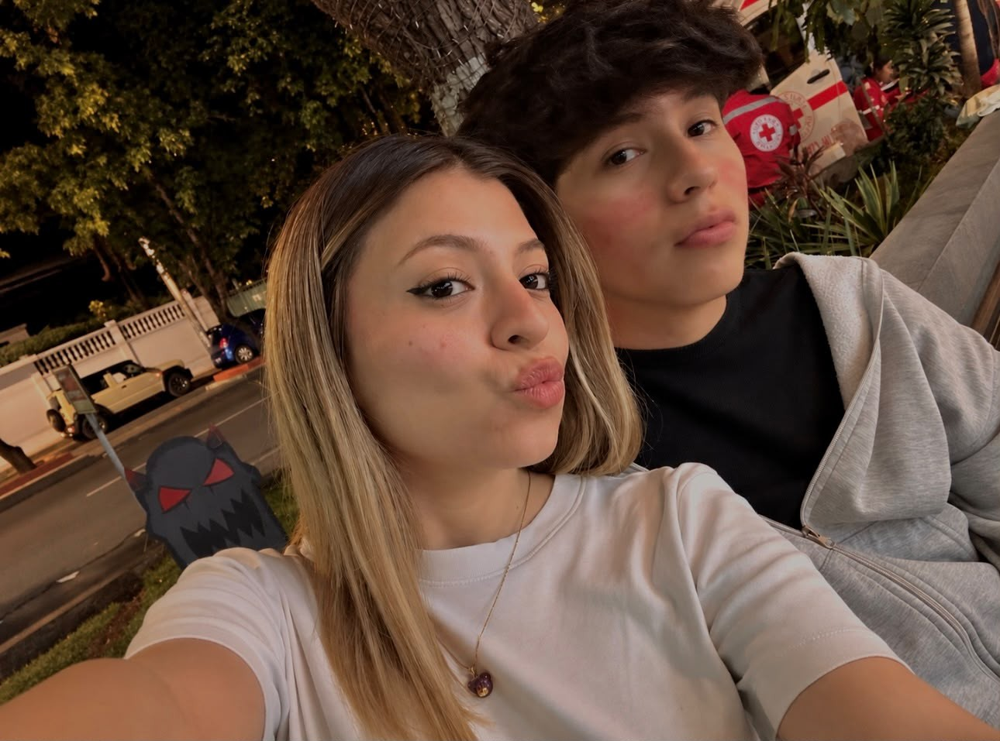
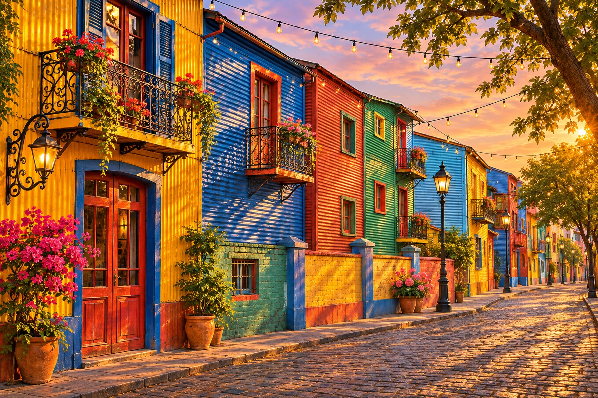

Todo empezó un miércoles.
El 6 de noviembre de 2002 cayó miércoles. Este cumpleaños, en 2026, llega en viernes: una excusa preciosa para celebrarte.
06 NOVIEMBRE · UN DÍA MUY TUYO
Hoy te regalo un pedacito de casa.
Y todo este amor que tiene tu nombre.
Con amor, Roberto ♡

01 / UN PEDACITO DE CASA
Buenos Aires, en el corazón.Sé cuánto extrañás La Boca. No puedo poner todo tu barrio en una página, pero sí sus colores, sus pequeños rituales y un abrazo para cuando la nostalgia apriete.

POSTAL IMAGINADA · BUENOS AIRES
Hay colores que siempre van a ser casa.
Tocá un ritual y quedate un poquito en casa.
02 / NUESTRO PEQUEÑO UNIVERSO
Lo cotidiano, con vos, es especial.Un álbum de nosotros. Tocá cualquier foto para verla de cerquita.
Cuatro pequeños viajes de vuelta a nosotros.
EL MUNDO RECIBIÓ ALGO LINDO
06NOVIEMBRE03 / EL COMIENZO DE TU HISTORIA
El 6 de noviembre de 2002 cayó miércoles. Este cumpleaños, en 2026, llega en viernes: una excusa preciosa para celebrarte.
2002 es capicúa: se lee igual de izquierda a derecha y al revés. Tu historia empezó en un año con su propia simetría.
Noviembre pertenece a la primavera del hemisferio sur. Y tu día fue el número 310 de aquel año: quedaban 55 días para terminarlo.
04 / LAS COSAS QUE TE HACEN SONREÍR
Hay seis guiños escondidos en este paseo. Algunos están a simple vista.
Otros esperan que toques la puerta correcta.
0 de 6 sorpresas descubiertas
UN LADO A PARA VOS · UN LADO B PARA NOSOTROS
Dale play a este momento.Elegí un ambiente para recorrer esta carta, o abrí una canción para dedicarte un ratito.
PARA CUANDO NECESITES UN ABRAZO
Hay palabras que merecés leer más de una vez.
Este es tu pequeño refugio.
UN VALE SOLO PARA VOS
Elegí al azar una pequeña promesa para compartir.
ADRI + ROBERTO · SIN FECHA DE VENCIMIENTO05 / LO QUE QUERÍA DECIRTE
Mi Adri,
Quería regalarte algo que se pareciera un poquito a vos: lleno de colores, de ternura y de esas pequeñas cosas que te hacen sonreír.
Sé que a veces extrañás tu barrio, los sabores de casa y todo eso que no entra en una valija. Ojalá este rincón te abrace un poquito. Que entre un mate, el azul y oro y nuestros recuerdos, sientas cerca lo que tanto querés.
Me encanta compartir la vida con vos. Los planes grandes, las pavadas, las fotos que guardamos y esos momentos que son nuestros aunque nadie más los entienda.
Hoy deseo que tengas motivos de sobra para reír, sueños que te ilusionen y amor que te acompañe. Y quiero seguir estando ahí: para escucharte, para cuidarte y para crear muchos más recuerdos juntos.
Feliz cumpleaños, mi amor. Qué suerte la mía de coincidir con vos.
Te amo.
Roberto ♡
UN MOMENTITO PARA CREER EN LA MAGIA
Pensá en algo que te haga ilusión.
Yo ya pedí el mío: seguir compartiendo la vida con vos.
Mantené presionado o tocá varias veces.
También podés usar Espacio o Enter.
Ese deseo queda entre vos y el universo.
Que todo lo lindo encuentre el camino hacia vos.
Feliz cumpleaños, Adri.Mi deseo favorito ya está en mi vida. Sos vos. ♡